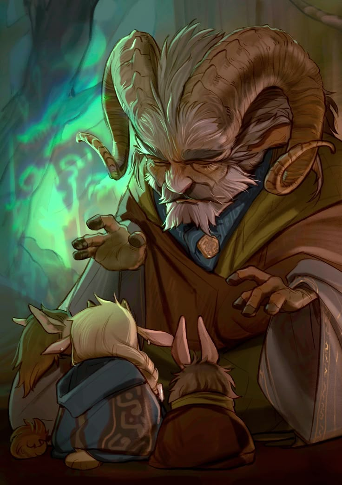
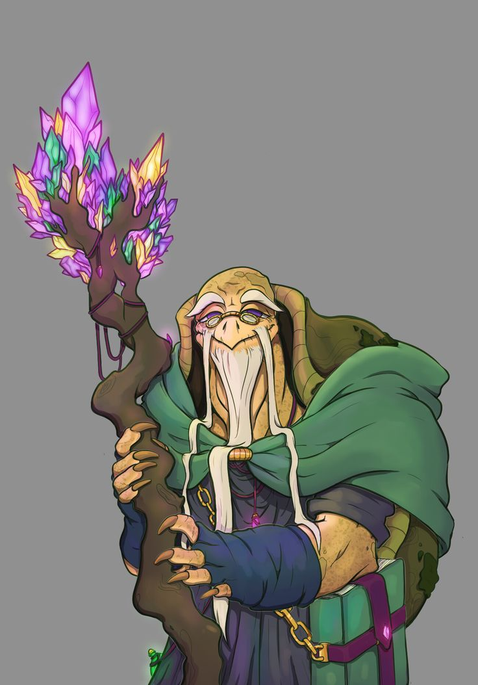
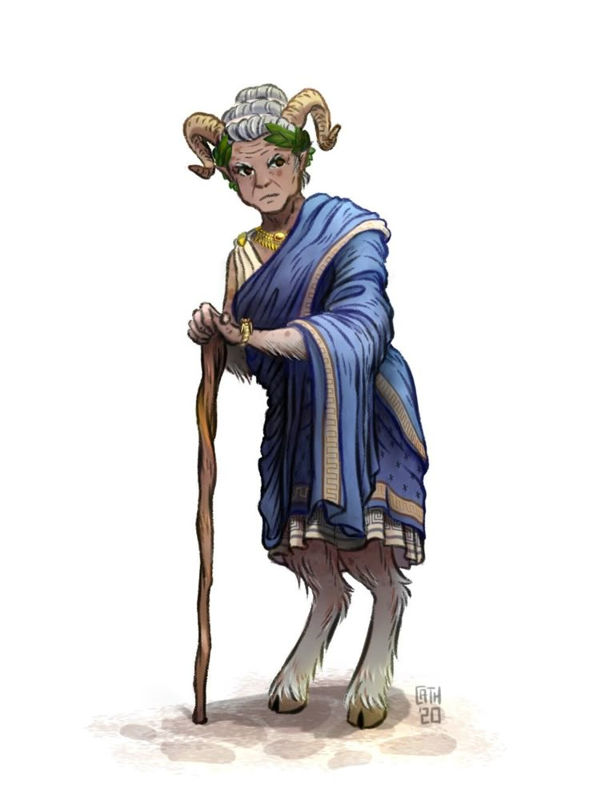
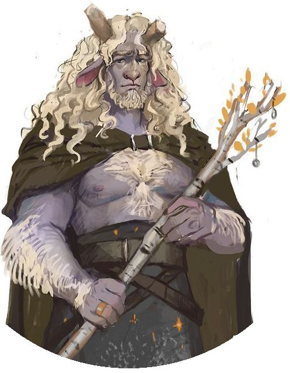
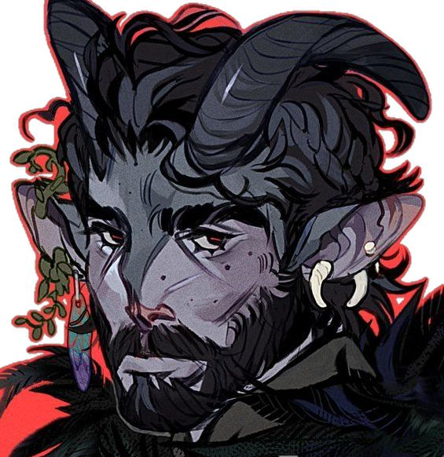
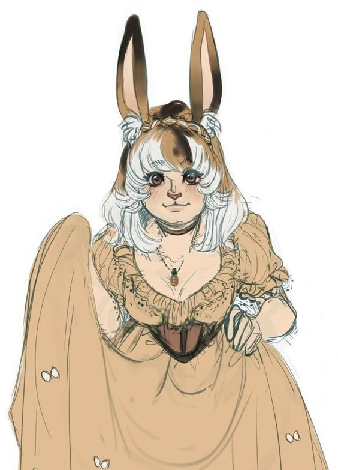

A Família Guizos governa a cidade-estado de Bubentcy desde que a deusa Leskie confiou a Ramiel Guizos — seu amigo mais próximo — a tarefa de criar a futura rainha Anno. Entre o gelo e as pastagens férteis por serem mais próximas do Reino Polaris, a família se reconstruiu ao longo de três gerações: um casamento desfeito e refeito em outro amor, títulos cedidos por escolha e não por perda, e filhos que decidiram, cada um à sua maneira, o que fazer do peso — ou da ausência — de uma coroa ducal.
✦ OS DUQUES DE BUBENTCY

✦ família guizos
Ramiel Guizos
Amigo querido de Leskie, foi ele quem criou Anno e recebeu a tarefa de cuidar da cidade-estado de Bubentcy — uma singela região coberta de gelo, porém a mais próxima do Reino Polaris e de seu calor, o que lhe rende um terreno fértil, raro tão ao sul, para plantio e criação de animais.

✦ família guizos
Jozue Guizos
Marido de Ramiel, ele ajuda o duque principalmente pela sua vasta experiência vivendo no Reino Flutuante junto à família Pecunia, no passado — um saber de outras terras que Bubentcy raramente vê chegar até suas fronteiras geladas.
✦ A EX-DUQUESA

✦ família guizos
Linda Thadias
Ex-esposa de Ramiel — a separação veio quando ambos se descobriram homossexuais. Preferiu se afastar de sua antiga posição de Duquesa para viver uma vida simples no Reino Polaris ao lado de sua parceira, mas volta periodicamente e troca cartas com os filhos.
✦ OS FILHOS

✦ família guizos
Kaleb Guizos Thadias
Filho mais velho, cresceu ouvindo as histórias do pai sobre uma vida pacífica. Quando a mãe se afastou, mesmo já mais velho, ele fez o mesmo — hoje segue a vida como pastor de ovelhas em uma fazenda de Bubentcy, longe do título que um dia carregou.

✦ família guizos
Fanio Guizos Thadias
Segundo filho — diferente do irmão mais velho, sempre esperou espirituosamente por uma aventura mais robusta do que as histórias do pai sugeriam. Dedicou anos às fortalezas de Smotritel como soldado real, até ser proclamado Marquês por sua dedicação.

✦ família guizos
Flora Guizos
Filha mais nova e adotiva de Ramiel e Jozue, deixou Beccus, no Reino Flutuante, ao lado de Jozue rumo ao reino do sul. Por mais que ame a neve de sua nova casa, ainda sente saudade de Beccus.